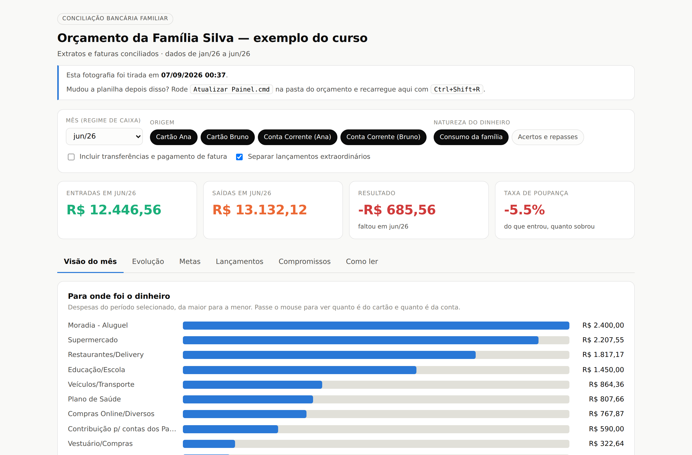
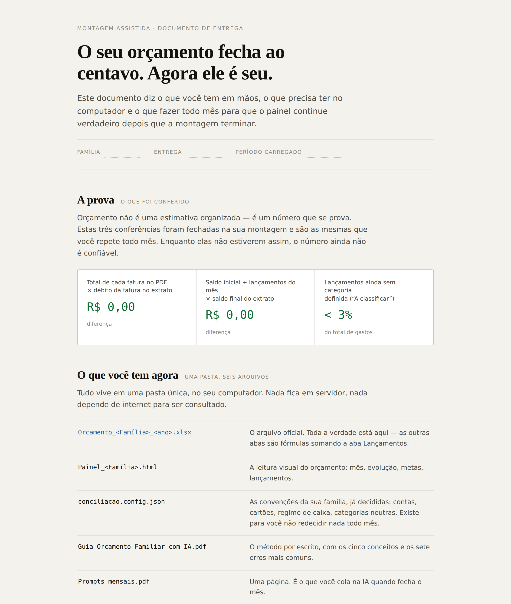
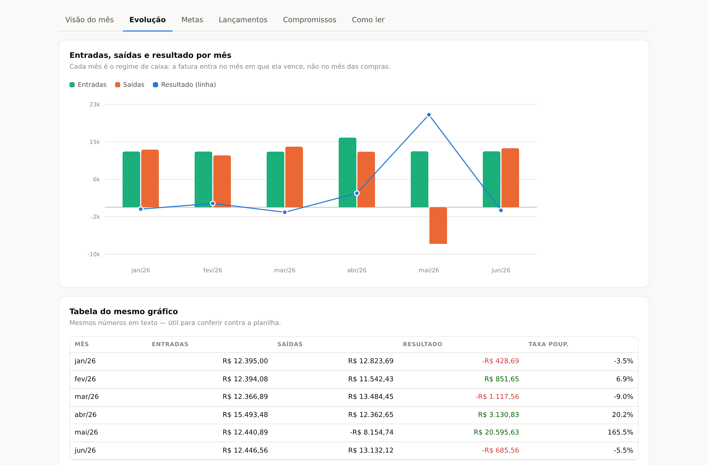
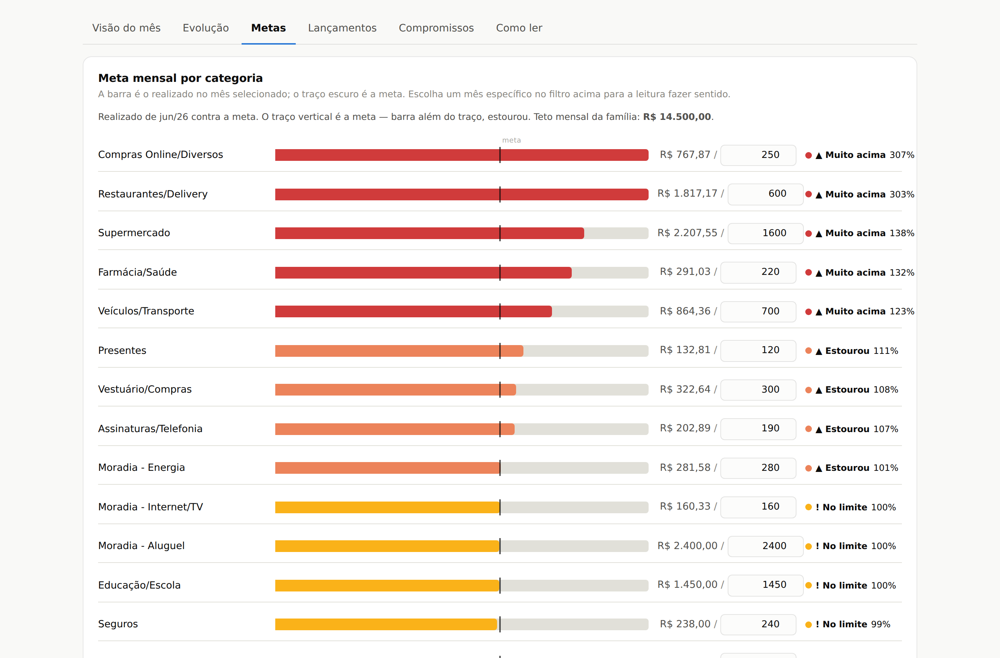
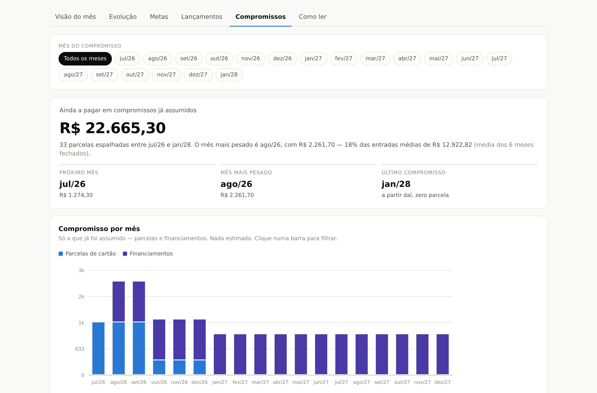
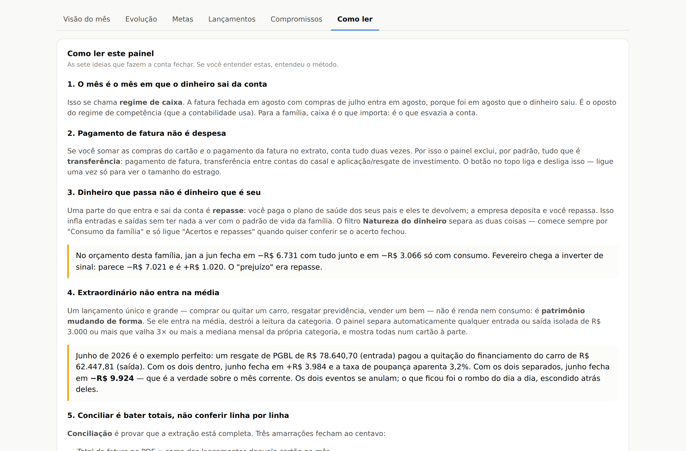

Organize uma vez. Siga sozinha.
Implantação guiada do orçamento da sua família: em poucos encontros, você sai com uma planilha que fecha ao centavo, um painel claro e a rotina para continuar sem depender de ninguém.

Um retrato comum de quem cuida do dinheiro da casa
"Todo mês falta dinheiro e eu não sei exatamente onde foi."
"Já tentei planilha e aplicativo. Duas semanas depois virou ficção."
"A fatura do cartão chega e eu levo susto."
"Eu e meu marido/minha esposa não conseguimos conversar sobre dinheiro, porque cada um tem um número na cabeça."
"Não sei quanto do meu salário do mês que vem já está comprometido em parcelas."
"Tenho consultório / PJ e não separo o que é da empresa e o que é da casa."
Por que as planilhas falham: dependem de você lembrar de digitar. Este método inverte a lógica — você não digita nada. O banco já anotou tudo; o trabalho é transformar extratos e faturas numa tabela organizada, e a inteligência artificial faz isso bem e rápido.
Organize uma vez, siga sozinha
Horas de implantação, não mensalidade
Você contrata um preço fechado, com começo, meio e fim.
Tudo fica no seu nome e no seu computador
Planilha, painel, assinatura de IA e, se você quiser, a conexão automática com o banco (Open Finance) são criados na SUA conta. A consultora não recebe extratos, não guarda arquivos e não tem acesso às suas contas. Nos encontros, você compartilha a tela e opera; ela orienta.
Você fecha o mês sozinha em ~30 minutos
Os fechamentos acompanhados servem para isso: no primeiro ela conduz, no segundo você conduz, no terceiro você faz e ela só confere.
Seus dados ficam com você
Dados financeiros são pessoais e sensíveis. Deixá-los com o titular é mais seguro para a família e mais simples do ponto de vista da LGPD (Lei Geral de Proteção de Dados).
Provar, capturar, soltar
A ideia central é conciliar: bater duas fontes independentes e a diferença dar zero. Se o total da fatura é R$ 4.321,55, o débito no extrato tem que ser R$ 4.321,55. Enquanto não fechar em R$ 0,00, o número não é confiável.
A conciliação fecha ao centavo. É o que faz a família confiar no próprio número.
As regras da família ("PIX para fulano é supermercado") viram uma tabela (o De-Para). O mês seguinte fica rápido.
Um lembrete recorrente no dia do vencimento da fatura. Sem gatilho, a rotina morre no segundo mês.
5 conceitos que mudam a forma de ver o orçamento
- Regime de caixa — conta quando o dinheiro sai do bolso.
- O mês do cartão é o mês do vencimento da fatura, não o da compra.
- Pagar a fatura não é despesa — lançar as compras e o pagamento conta o mesmo gasto duas vezes.
- De-Para — a IA aprende com as suas correções.
- Parcelas — o futuro que você já gastou.
Em 4 passos
Conversa inicial gratuita
10 minutos para entender a rotina da casa, quantos bancos e cartões entram e qual pacote faz sentido. Antes, você responde um pré-formulário de 2 minutos.
Montagem
Criamos juntas, na sua conta, a planilha, o painel e as regras da sua família (e a conexão com o banco, se você quiser).
Fechamentos acompanhados
Do "eu conduzo" ao "você faz sozinha".
Autonomia
Você fecha o mês em ~30 minutos. Se travar, existe a sessão avulsa.
Uma pasta única, no computador da família
- Planilha oficial do orçamento — toda a verdade está aqui.
- Painel visual (abre com duplo clique, funciona sem internet): Visão do mês, Evolução, Metas, Lançamentos, Compromissos, Como ler.
- As regras da família (De-Para) e as convenções já decididas.
- Guia do método em PDF e os prompts mensais (1 página).
- Um lembrete no celular no dia do vencimento da fatura.
As 3 conferências que provam o orçamento
| Total de cada fatura × débito no extrato | R$ 0,00 |
|---|---|
| Saldo inicial + lançamentos × saldo final do extrato | R$ 0,00 |
| Lançamentos sem categoria ("A classificar") | < 3% |

Exemplo com dados fictícios.
Cada aba responde uma pergunta
Navegue no painel que você recebe na implantação
Escolha o período, veja as metas, as parcelas que já estão comprometidas e a fatura em formação — e faça perguntas ao painel, como “quanto gastei no último fim de semana?”. É uma família fictícia: no seu, entram os seus números.




Todas as imagens do painel e a demonstração usam dados fictícios de uma família criada apenas para exemplo. Clique em qualquer imagem para abrir a demonstração.
Preço fechado, sem mensalidade
Kit gratuito
Guia em PDF com o método, planilha-modelo em branco e prompts, para quem quer tentar sozinha antes de contratar.
- Guia do método em PDF
- Planilha-modelo em branco
- Prompts prontos
- Envio por e-mail no mesmo dia
Implantação Essencial
Para família simples: 1 banco e até 2 cartões.
- Montagem completa na sua conta
- 2 fechamentos acompanhados
- Suporte por mensagem por 60 dias
- Prazo total: cerca de 2 meses
Implantação Completa
Para família com vários bancos e cartões, parcelamentos e despesas divididas (ex.: contas dos pais com os irmãos).
- Montagem completa na sua conta
- 3 fechamentos acompanhados
- Revisão de metas
- Suporte por mensagem por 90 dias
Profissionais liberais
Para quem tem consultório ou empresa e precisa separar pró-labore, conta PJ e casa.
- Escopo próprio, definido na conversa inicial
- Separação clara entre PF e PJ
Sessão avulsa
Para quem já foi implantado: revisão, tira-dúvidas ou "o mês não fechou e não achei a linha".
- 1 hora online
- Foco no que travou
- Assinatura de IA com Projetos (ex.: Claude Pro), cerca de US$ 20/mês, cobrada em dólar, no seu nome.
- Opcional: conexão automática com o banco via Open Finance (ex.: Banco MCP, a partir de R$ 19,90/mês por 1 banco). Sem ela, o método funciona com os PDFs de extrato e fatura.
Formas de pagamento: Pix ou cartão. 50% na contratação e 50% após o primeiro fechamento, ou em até 3x.
Seus dados ficam com você
Não guardamos dados bancários, não acessamos contas e não temos acesso ao Open Finance do cliente. As assinaturas ficam no nome do cliente.
Sem senha, sem extrato
Nos encontros, você compartilha a tela e opera; a consultora orienta, mas nunca recebe seus arquivos.
Tudo no seu nome
Planilha, painel e assinaturas de IA (e Open Finance, se você quiser) são criados na sua própria conta.
LGPD por design
Deixar os dados com o titular é mais seguro para a família e mais simples do ponto de vista da lei.
Saiba mais na nossa política de privacidade.
Maria Alice Antonialli
Durante dez anos, no Itaú, meu trabalho foi planejar e controlar orçamento: fazer número fechar e explicar por que ele não fechava. Quando olhei para o orçamento da minha própria família, percebi que nenhum aplicativo entregava o que eu fazia no banco — a prova de que o número está certo.
Construí um método, testei em casa e hoje ensino outras famílias a montar o delas. Eu organizo com você; depois, o controle é seu.
Tire suas dúvidas
Vocês acessam minha conta bancária?
Não. Nada fica com a consultora: nem senha, nem extrato, nem conexão com o banco. Tudo é criado na sua conta e você opera na sua tela.
Preciso saber Excel?
Não. Você não digita os gastos: a IA transforma os dados do banco em planilha. O seu papel é dizer o que cada gasto é.
Depois da implantação eu fico sozinha?
Sim, esse é o objetivo. O suporte por mensagem cobre 60 ou 90 dias, e depois existe a sessão avulsa se precisar.
Tenho que pagar alguma assinatura?
Sim, uma assinatura de IA com Projetos (ex.: Claude Pro, cerca de US$ 20/mês). A conexão automática com o banco é opcional.
Quanto tempo por mês depois de pronto?
Cerca de 30 minutos, no dia do vencimento da fatura.
Meu marido/minha esposa tem outra conta e outro cartão. Entra?
Deve entrar. Um mês sem uma das contas parece um rombo que não existe.
Funciona para médico ou quem tem PJ?
Sim, com escopo próprio (PF + PJ). Fale com a gente para um orçamento.
É consultoria de investimento?
Não. É organização e controle do orçamento.
Posso testar antes?
Sim: baixe o kit gratuito e tente sozinha.
Conte sua situação em 2 minutos e agende uma conversa de 10
Responda o pré-formulário ao lado. Ao enviar, o seu WhatsApp abre com as respostas já escritas — é só tocar em enviar. Assim a Maria Alice chega na conversa de 10 minutos sabendo da sua rotina e já indica o pacote certo.
- Conversa gratuita, 100% online, para todo o Brasil.
- Segunda a sexta, das 9h às 18h.
- WhatsApp: (11) 99429-0680
- E-mail: lilice.antonialli@gmail.com
Não pedimos valores, renda, senhas nem dados bancários. As respostas não ficam guardadas neste site: vão direto do seu WhatsApp para o da Maria Alice.